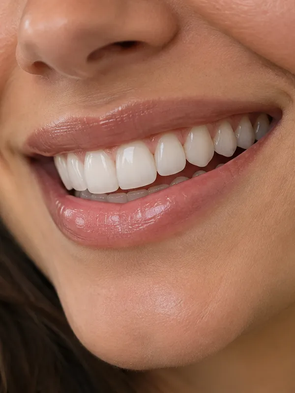
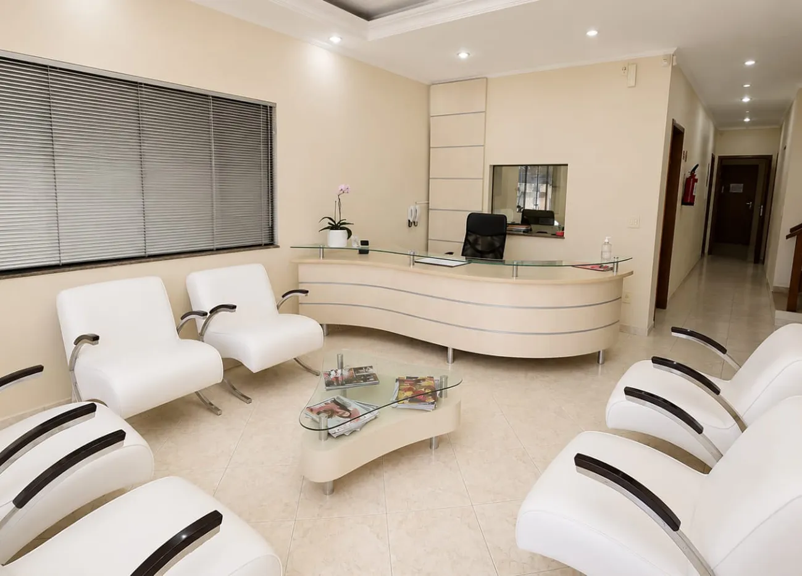
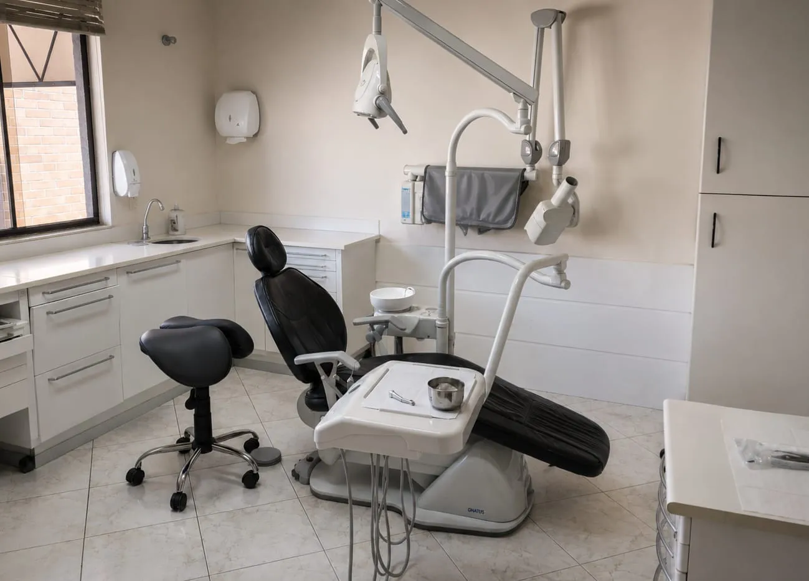
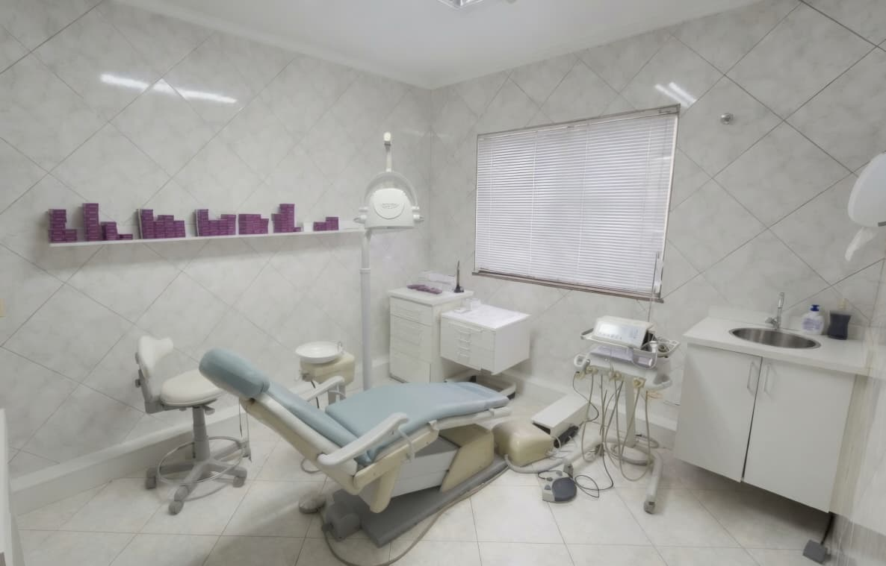
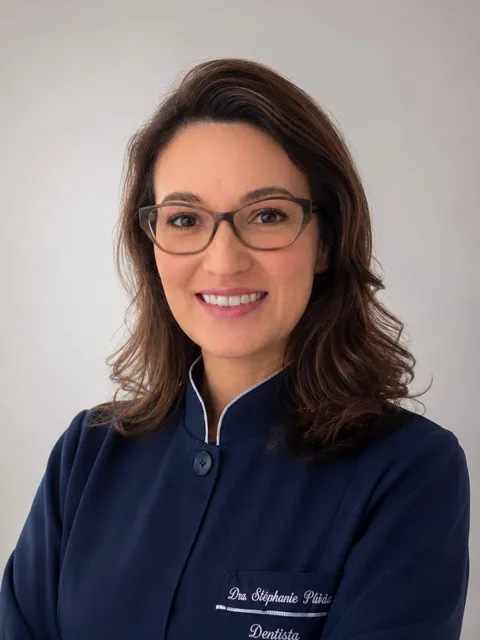

Faceta de Resina
Alternativa para alterações de formato, proporção e estética, com planejamento individualizado.
Transforme a harmonia do seu sorriso com facetas planejadas de forma individualizada, respeitando as características dos seus dentes e do seu rosto.
Facetas de resina e porcelana com planejamento estético no ISBI Odonto, em Santa Quitéria.

Formato, cor e proporção fazem parte da harmonia do sorriso. Cada caso é avaliado individualmente, respeitando suas características e a naturalidade.
Seus dentes possuem formatos diferentes?
Existem pequenas manchas ou alterações de cor?
Você gostaria de melhorar tamanho ou proporção dos dentes?
Pequenos espaços entre os dentes incomodam você?
Possui dentes desgastados ou pequenas imperfeições?
Busca um sorriso mais harmônico sem perder a naturalidade?
O planejamento considera as características do sorriso, a saúde bucal e os objetivos de cada paciente.
Análise dos dentes, saúde bucal, características do sorriso e objetivos do paciente.
Definição de formato, proporções, tonalidade e possibilidades de tratamento.
Avaliação da possibilidade de facetas de resina, porcelana ou outras alternativas.
Realização do procedimento conforme o planejamento definido para o sorriso.
Alternativa para alterações de formato, proporção e estética, com planejamento individualizado.
Alternativa estética com alta estabilidade de cor e possibilidade de planejamento detalhado do sorriso.
Laminados cerâmicos finos que podem ser indicados em casos selecionados para melhorar forma, cor e proporção.
O laboratório anexo ao consultório aproxima as etapas clínicas e laboratoriais, contribuindo para mais precisão, agilidade e personalização em diferentes fases do tratamento.
Formato, proporções, tonalidade e possibilidades de tratamento são avaliados conforme as características do sorriso e os objetivos de cada paciente.
A avaliação é feita pelo profissional responsável pelo planejamento e condução do tratamento, trazendo mais clareza no diagnóstico e na tomada de decisão.
Experiência clínica e planejamento personalizado no cuidado com a saúde bucal e a estética do sorriso.
Localizado no bairro Santa Quitéria, o ISBI Odonto tem fácil acesso para pacientes de diferentes regiões de Curitiba.
Antes de indicar facetas, avaliamos formato dos dentes, proporções, cor, saúde bucal e características individuais do sorriso. O objetivo é encontrar uma solução que valorize a estética sem criar um resultado artificial ou padronizado.



Somos uma clínica odontológica com foco em reabilitação oral, próteses, implantes dentários e tratamentos voltados à recuperação da função mastigatória, saúde bucal e estética do sorriso.
Localizada no bairro Santa Quitéria, com fácil acesso para pacientes de diferentes regiões de Curitiba, a clínica atua há 23 anos com experiência clínica e planejamento personalizado.
Entre os diferenciais da nossa estrutura estão o laboratório de prótese próprio, o centro cirúrgico e a integração entre diagnóstico, etapas clínicas, procedimentos cirúrgicos e reabilitação protética no mesmo local.
Conheça os profissionais que atuam no ISBI com foco em estética dental, reabilitação oral, planejamento individualizado e atendimento acolhedor.

A Dra. Stéphanie Padilha Geraldini é cirurgiã-dentista formada pela Universidade Tuiuti do Paraná, em 2010.
É especialista em Prótese Dentária e atua também nas áreas de odontologia restauradora e estética, com formação complementar em próteses sobre implante. Com 16 anos de experiência em reabilitação oral e estética dental, realiza tratamentos voltados à recuperação do sorriso, função mastigatória e harmonia estética, sempre com planejamento individualizado para cada paciente.
O Dr. Luciano Zanetti é cirurgião-dentista graduado pela Universidade Estadual de Ponta Grossa, em 1997, e especialista em Implantodontia pela Universidade Federal do Paraná.
Com 28 anos de experiência em implantes dentários, atua no planejamento e execução de tratamentos voltados à reabilitação oral, devolvendo função, segurança e qualidade de vida aos pacientes por meio de soluções com implantes e próteses.
Sua trajetória profissional está diretamente ligada à história do ISBI, onde também exerce a função de responsável técnico da clínica.
Depoimentos de pacientes atendidos na clínica. As avaliações podem ser conferidas diretamente no Google.
O ISBI Odonto está localizado no bairro Santa Quitéria, com fácil acesso para pacientes de regiões próximas como Água Verde, Vila Izabel, Portão, Ecoville, Campo Comprido e região.
R. Prof. Ulisses Vieira, 1315 — Santa Quitéria, Curitiba - PR, 80310-120
Clique para ligar ou fale pelo WhatsApp.
Agende uma avaliação no ISBI Odonto e descubra quais possibilidades podem ser indicadas para melhorar forma, cor e harmonia do seu sorriso.